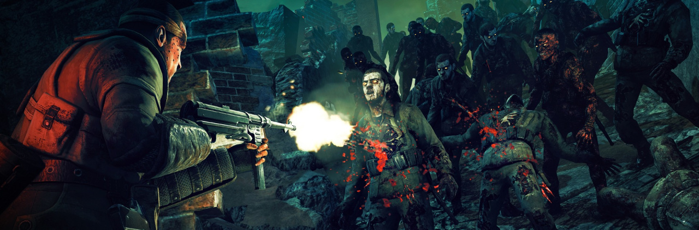
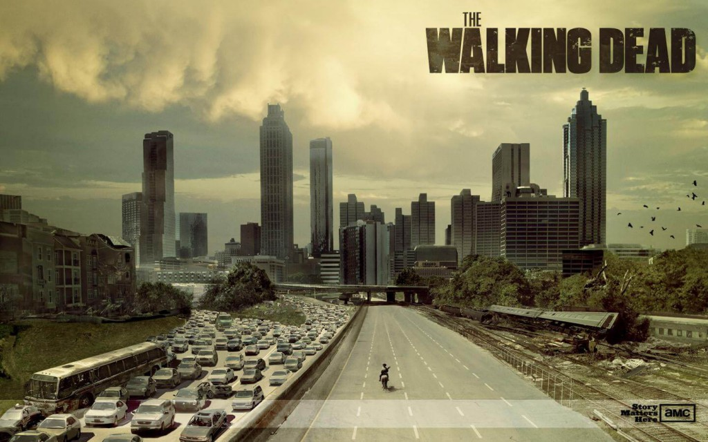

Aller directement à la partie traitant de :
The Walking Dead est une série télévisée d'horreur et dramatique américaine, adaptée par Frank Darabont et Robert Kirkman,
créateur de la bande dessinée du même nom, diffusée depuis le 31 octobre 2010 sur AMC.
En France, la série est diffusée depuis le 20 mars 2011 sur OCS Choc, en Belgique et au Luxembourg, depuis le 4 avril 2011 sur Be Séries, en Suisse, depuis le 2 décembre 2012 sur RTS Un et au Québec, depuis le 29 avril 2019 sur AddikTV. À l'international, la série est diffusée sur Fox Networks Group.
Elle est également diffusée en partie sur Netflix.
La série d'AMC reçoit majoritairement des critiques très positives, classée phénomène de société par plus d'un média, aussi dans les réseaux sociaux et reçoit plusieurs nominations et récompenses pour la performance de ses acteurs ainsi que pour la qualité technique de ses épisodes. Elle est par exemple nommée aux Writers Guild of America Awards et à la prestigieuse cérémonie de récompenses de prix que sont les Golden Globes. Au vu de son succès d'audience mais aussi critique, une série dérivée intitulée Fear the Walking Dead est diffusée depuis le 23 août 2015.
Une grande partie de la série a lieu dans la région métropolitaine d'Atlanta et dans la campagne environnante.
Le tournage de la série se dirige ensuite vers d'autres zones comme Alexandria en Virginie.
La série en est à sa dixième saison diffusée depuis le 6 octobre 2019, la chaîne a aussi récemment signé une deuxième série dérivée pour 2020,
ainsi qu'un film centré sur Rick Grimes, produit par Universal Pictures.
L'histoire suit le personnage de Rick Grimes (interprété par Andrew Lincoln), adjoint du shérif du comté de Kings (en Géorgie) qui se réveille d'un coma de plusieurs semaines pour découvrir que la population a été ravagée par une épidémie post-apocalyptique inconnue qui transforme les êtres humains en morts-vivants, appelés « rôdeurs ».
Après avoir retrouvé sa famille, il devient très vite le leader d'un groupe de rescapés d'Atlanta. Ils seront amenés à devoir survivre dans un monde post-apocalyptique face à des rôdeurs et d'autres groupes de survivants, pour certains plus dangereux encore que les rôdeurs eux-mêmes. Ensemble, ils vont devoir tant bien que mal faire face à ce nouveau monde devenu méconnaissable, à travers leur périple dans le Sud profond des États-Unis.
Voir la bande annonce de la saison 1
Les rôdeurs de The Walking Dead sont des humains infectés par une pandémie d'un virus « zombifiant », qualifié simplement de « virus » par les survivants, et ce tout au long de la série. Ils sont nommés de plusieurs façons : « les rôdeurs » ou « les marcheurs » la grande majorité du temps, mais aussi « les mordeurs » ou plus rarement les geeks et les « dépeceurs », en raison de leur peau très pâle ou grise. Dans la série, tout le monde est en fait contaminé par le « virus» et chacun est voué à se transformer après sa mort, celle-ci pouvant être simplement précipitée par une morsure de rôdeur.
Dans une période aléatoire allant de quelques minutes à plus de huit heures après la mort, une partie primaire du cerveau se réveille, et le mort donne naissance à un rôdeur pourrissant ne cherchant qu'à se nourrir de créatures encore vivantes, qui peuvent être de petits animaux (rats, chats, oiseaux…) ou des animaux plus gros (biches, chevreuils, chevaux…) avec cependant une très nette préférence pour la chair humaine fraîche. Bien qu'ils se déplacent relativement lentement et qu'un seul d'entre eux ne constitue pas toujours une menace mortelle, les choses se compliquent lorsque plusieurs individus se déplacent à la fois, en particulier dans des espaces clos ou confinés comme les maisons, les immeubles de bureaux ou les hôpitaux. Les rôdeurs, n'ayant d'autre instinct de survie que la recherche constante de nourriture, avancent constamment vers leurs proies, et une seule de leurs morsures est fatale : cela explique pourquoi, regroupés en foules, ils peuvent être extrêmement dangereux et potentiellement mortels.
Les rôdeurs sont bien plus résistants que les humains : ils restent éveillés quelles que soient les blessures subies, à l'exception de celles qui atteignent leur cerveau. Ainsi, le tout premier rôdeur croisé dans la série par Rick a perdu ses deux jambes, ce qui ne l'empêche pas de ramper inlassablement vers le héros dans le but de le manger. Seuls les tirs d'armes à feu qui pénètrent directement la boite crânienne ou les coups perforant cette dernière sont donc efficaces pour l'élimination des rôdeurs. Les autres actions offensives (empoisonnement, mutilations, coups et blessures aux membres) peuvent éventuellement les ralentir ou les handicaper lourdement afin de les rendre inaptes à la poursuite des humains, mais ne les neutralisent pas. De plus, trancher la tête d'un rôdeur ne le tue pas, la tête continuant à chercher à mordre les humains à sa portée.
Contrairement aux morts-vivants de George A. Romero, les rôdeurs de The Walking Dead font preuve d'une étonnante agilité bien qu'ils ne courent pas aussi vite que ceux du film L'Armée des morts, ils se détachent de l'archétype lent et maladroit des morts-vivants classiques par une capacité à avancer de manière relativement rapide et certains peuvent même courir plus ou moins vite (à une allure proche de celle d'un joggeur qui avancerait à une allure modérée) pour poursuivre des animaux, les humains ou leurs véhicules. Ils peuvent ramper sous des obstacles s'ils sont attirés par quelque chose et plus particulièrement un humain. Lors du deuxième épisode de la première saison (Tripes), parmi une meute de rôdeurs, l'un d'eux se sert d'une pierre pour briser une vitrine de magasin.
En revanche, ils n'ont aucune organisation structurelle ou hiérarchique apparente et semblent même à peine conscients les uns des autres, mis à part lorsque l'un d'eux repère un humain et se met alors à grogner en se dirigeant vers lui par tous les moyens à sa disposition (course, marche, rampement) et selon son état physique.
De même, ils n'élaborent aucune stratégie intelligente pour piéger les humains ou se servir d'un élément extérieur pour arriver à les piéger, les attraper et les dévorer : une simple barrière peut les tenir à distance des années durant si elle est suffisamment résistante, aucun rôdeur ne tentera jamais quoi que ce soit pour la contourner ou la détruire consciemment (une horde de dizaines d'individus peut faire plier une barricade sous son seul poids mais de manière inconsciente), sauf si un humain les en détourne par sa présence ou en faisant diversion.
Dès le début de la deuxième saison, il est possible d'entrevoir le mécanisme des « hordes » : plusieurs rôdeurs avançant dans la même direction, par exemple pour suivre un bruit ou une proie, en touchent plusieurs autres, qui à leur tour entraînent d'autres « rôdeurs » dans la même direction, jusqu'à former un groupe compact de plusieurs dizaines ou centaines d'individus ce qui les rend alors extrêmement dangereux, avançant sans relâche dans une même direction à moins qu'ils n'entendent un bruit qui les détourne de leur route ou qu'ils soient tués. Dès qu'un rôdeur change de direction à cause d'un quelconque événement, comme la détection d'une proie ou d'un obstacle, la horde fait de même.
Les rôdeurs sont très sensibles au bruit : toute perturbation les attire, car cela signifie qu'une proie potentielle se trouve à proximité de la zone. C'est pourquoi les survivants tentent au maximum de rester discrets en présence de rôdeurs et de les éliminer silencieusement, comme le fait Daryl avec son arbalète de chasse.
Ils attaquent les humains de façon primaire, cherchant à les saisir pour les dévorer, de préférence aux bras et aux épaules, à la main, au tendon d'Achille et au mollet. Ces parties du corps sont les plus simples à attaquer pour un rôdeur se jetant sur quelqu'un par l'avant, l'arrière ou encore en attrapant la jambe d'un humain par surprise au niveau du sol pour mordre le tendon ou le mollet.
Plusieurs rôdeurs peuvent submerger un humain isolé ou blessé qui succombera sous le nombre, une seule morsure suffisant à enclencher le processus de développement du virus, même si l'humain survit ensuite à la confrontation contre les rôdeurs.
Il existe également un mode d'attaque « secondaire » qui suit en quelque sorte le principe des mines antipersonnel : un rôdeur se trouve parfois inanimé dans un couloir ou un endroit de préférence calme, ayant donc l'apparence d'un cadavre tout à fait ordinaire, les yeux clos et ne bougeant pas. Or, si un humain se présente à proximité immédiate, soit moins de quelques mètres, le rôdeur va sortir de son état de « veille » pour dévorer la proie qui ne se méfie pas de ce corps en apparence mort et sans danger. C'est par ce procédé que Hershel perd sa jambe dans la prison, étant resté près d'un rôdeur qui semblait définitivement mort dans un couloir sombre.
L'épisode pilote se déroule dans la ville d'Atlanta, Après que Rick se réveille de son coma et rencontre Glenn au centre ville qui est infesté de rôdeurs, les survivants se déplacent vers Le camp des survivants où Rick retrouve sa femme, son fils Carl et son collègue Shane puis l'équipe se voit contrainte de le quitter car un feu ravage la forêt pour aller au Centres pour le contrôle et la prévention des maladies (C.D.C).
La seconde saison se déroule à l'autoroute puis à la ferme des Greene.
La troisième saison et la première moitié de la quatrième se déroulent à la prison.
Les protagonistes ne vont ensuite cesser de bouger, allant successivement au Terminus à la fin de la quatrième saison et au début de la suivante, puis à l'église St. Sarah et enfin à la ville d'Alexandria en Virginie. C'est dans cette ville, dans laquelle résident également d'autres survivants, que Rick et les siens demeurent à partir de la sixième saison.
The Walking Dead prend place dans l'État de Géorgie situé au sud-est du territoire des États-Unis. Une sorte d'épidémie très dangereuse et contagieuse transformant les personnes en rôdeurs se déclare, en premier lieu sur le territoire national des États-Unis d'Amérique, puis dans le monde entier.
L'épicentre de la maladie n'est pas connu, mais il est possible de suivre son évolution grâce à divers éléments et notamment la chronologie dressée par le Docteur Edwin Jenner à la fin de la première saison.
La chronologie suivante peut être considérée comme juste :
jours précédant l'épidémie : une épidémie de grippe est constatée sur la côte ouest des États-Unis. Le personnel médical remarque rapidement que la maladie est beaucoup plus virulente qu'une grippe normale, ce qui est confirmé par la progression rapide de l'infection et le décès constaté des personnes touchées. Malgré tout, les autorités ne préconisent aucune mesure sanitaire particulière et les médias relaient assez peu les informations sur les violences de certains « infectés » qui commencent à se manifester au sein des villes ;
jour 1 : début constaté et reconnaissance de l’épidémie par les autorités gouvernementales. Le premier patient atteint est nommé Wildfire. L'épicentre est inconnu et il est seulement indiqué qu'il se situe sur le territoire des États-Unis, vraisemblablement dans un centre important de population, tel qu'une grande ville. On apprend dans la série Fear the Walking Dead que l'épicentre pourrait se situer à Los Angeles. Les forces de l'ordre locales sont rapidement dépassées par la violence et le nombre des « infectés », ainsi que les violentes émeutes qui en découlent. Les autorités fédérales du pays décident d'intervenir en soutien aux autorités locales pour gérer la situation. Le gouvernement mobilise l'armée et les services gouvernementaux les plus variés (police, hôpitaux, CDC, FEMA, médias d'informations) pour informer, secourir, évacuer et protéger les populations civiles à travers le pays (rappel : les États-Unis comptent alors environ 310 millions d'habitants). Des zones de sécurité saines sont créées par les militaires au sein des villes et la population civile y est rassemblée. Les forces armées mènent des opérations de nettoyage pour éliminer les rôdeurs, afin de confiner, puis détruire l'infection ;
jours 2 à 62 : la maladie s'étend très vite et inexorablement à travers le pays. Le nombre de rôdeurs ne cesse d'augmenter en dépit de l'action des militaires. Les attaques des morts-vivants contre les forces fédérales sont de plus en plus nombreuses. Les difficultés de l'armée à contrôler les zones saines dispersées au sein des villes se conjuguent à l'augmentation des pertes militaires, ce qui oblige le gouvernement à abandonner la stratégie de confinement. Les autorités décident peu à peu de regrouper la population dans les grandes villes, telles Atlanta ou Washington D.C afin de mieux protéger les citoyens. L'armée abandonne les secteurs jugés non défendables (quitte, parfois, à abandonner les populations civiles) et se replie vers les grandes zones de sécurité définies par le gouvernement. L'US Air Force bombarde au napalm les zones abandonnées par l’armée, afin de limiter la propagation de l'infection (notamment les principales villes de la côte ouest de Seattle à San Diego et jusqu'au Colorado (dans la série Fear the Walking Dead) ;
jour 63 : après 2 mois, la pandémie devient brusquement mondiale, ne touchant plus seulement les États-Unis, mais le monde entier. Dans le pays, l’évacuation se poursuit vers les zones sûres, définies par le gouvernement à travers le pays. L'augmentation du nombre de rôdeurs devient exponentielle en dépit des bombardements aériens menés par l'armée ;
jours 64 à 193 : le pays sombre totalement dans le chaos. Les zones sûres, définies par le gouvernement (comme Atlanta et Washington) sont à leur tour envahies par les infectés. L'armée comme la population connaissent des pertes titanesques de façon très rapide et violente, parfois de l'ordre de 90 ou 95 pour cent des effectifs d'une unité ou d'une ville. Le gouvernement, dans une dernière tentative pour gérer la crise, ordonne aux militaires de nettoyer les zones à risques (hôpitaux, cliniques, laboratoires ou même camps de réfugiés non contrôlés), même si cela doit passer par l'élimination systématique de civils visiblement non affectés ;
jour 194 : les États-Unis sont dévastés depuis maintenant plusieurs mois, le gouvernement et l'armée ont disparu, et des dizaines de millions d'Américains meurent ou se transforment en rôdeurs.
Visiter la page dédié au comics ICI